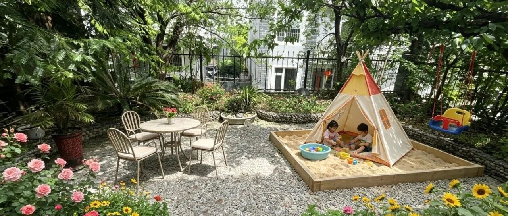

入住大理别墅的第一周！
点击关注 秋秋在分享
一起实现财务自由退休
大家好，我是秋秋呀！
提前退休旅居快一年了，我们终于来到大理，解锁全新生活。
这次计划在大理待半年，十月份离开去西双版纳过冬。
我们直接定了大学里的别墅，一个月5000多，有三层楼六个房间。

住在这里，吃饭很方便。
食堂的米饭超划算，100克只要0.3角，荤菜种类也多，满满一份才两块钱。
十块钱一个人可以吃得舒服又省钱，带娃也不用操心一日三餐！


我最开心的当然还是有个大院子，每天绿意盎然。
清晨一睁眼，就能听见鸟鸣，推开窗就是清新的空气，这种踏踏实实掌控自己生活的感觉，真的太美好了。

院子里已经种了樱桃和李子，我们每天都会采摘一些。
现在樱桃已经红通通的挂满枝头，李子树也结出了一颗颗小果实。
看着满院的生机，心里好欢喜。


我还买了一些花草苗，准备把院子好好装扮一番。
拆开快递才发现，发货地居然就是大理本地，果然是养花开挂区。

我计划种绣球、月季、太阳花，还有各种瓜果蔬菜的小苗，满满当当一院子。
其实就算提前退休，我偶尔也会焦虑，忍不住胡思乱想各种烦心事。可只要静下心来打理这些花草、种种菜，心里瞬间就变得安静又平和。

植物都是有鲜活生命力的，我特别喜欢这种生命和生命之间温柔的互动。
看着它们慢慢生根、发芽、开花，用心浇灌就会得到回应，所有的烦恼好像都能被抚平。

我已经开始幻想，怎么把这个小家布置得温馨又舒服了。
期待我们接下来在大理的生活！
大理是个很文艺的地方，我们也去周围农场玩过：

包括这次选房子也是每个小区的民宿都住了一遍，最后才选到合适的。
大理淡季3000左右就能租个带院子的一两居，旺季价格会翻倍。

总之，人生很长，我们有很多机会去体验不同的生活。
接下来就打算继续装扮我的别墅，我用Ai设计了一下，还看了网上很多图片。


会持续跟大家分享进度～
我也会找找周边好玩有意思的地方，感受大理的风光分享大家。
另外，住别墅虽然好，但是每天上下爬楼梯还真有点累。
房间多，我丢三落四，导致手机都不敢离开口袋，不然一不留神就不知道落在哪个房间，找起来特别麻烦。
虽然有小小的小插曲，但一点都不影响这份惬意。
入住大理的第一周，我很开心，接下来的半年，也很期待了。
希望我们都能财务自由、提前退休！